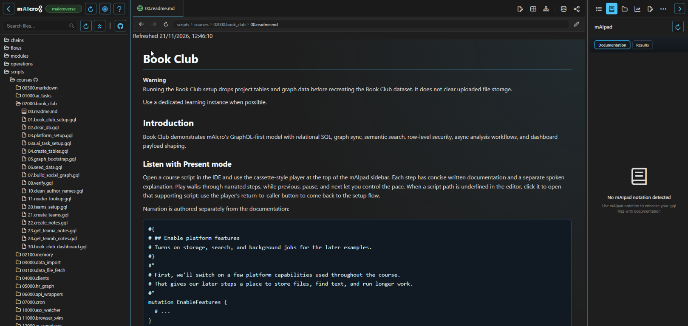
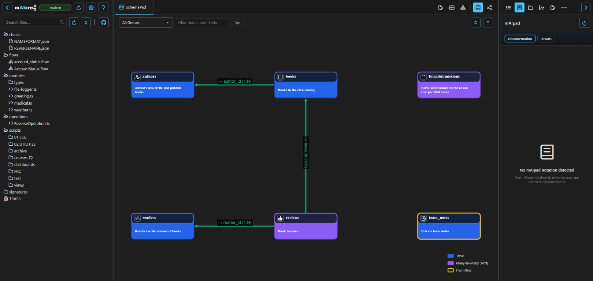
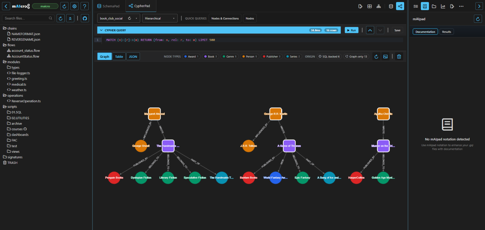
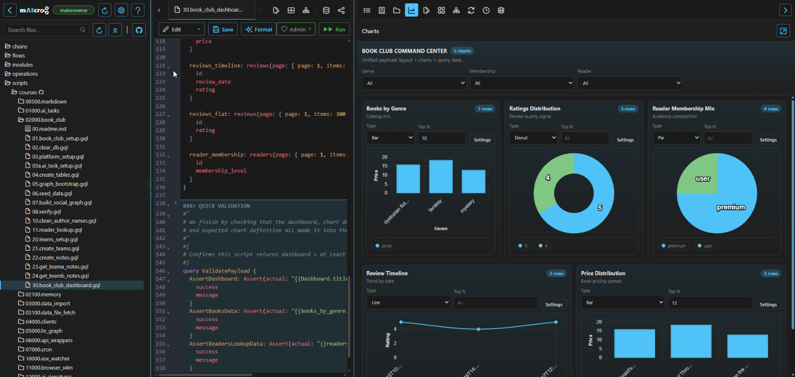
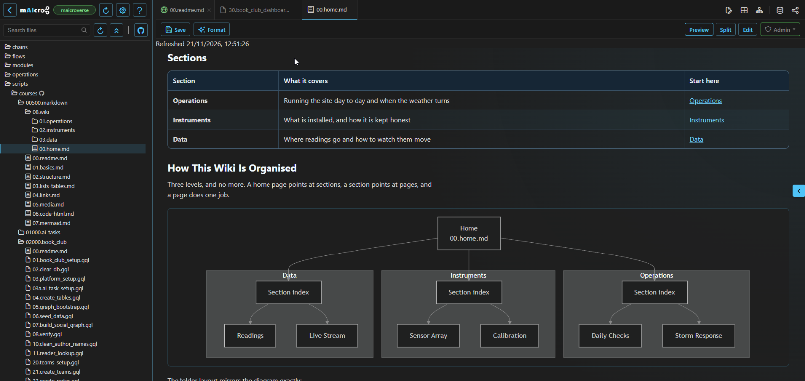

This is what building looks like.
The best way to understand mAIcro is to see it in use. Here’s the journey of making something real — from the first script to a shared knowledge base — inside the IDE that ships in the box. Every screen below is the actual product doing actual work.
-
The scripts that build it, explain it.
In mAIcro, the scripts that build your solution are also its documentation. Open one in the IDE and mAIpad shows the story beside the code: what each step does, why it’s there, and what to expect when you run it.
You stay in touch with how your solution works — and so does everyone, and every agent, who comes after you.

-
Give your idea a real database.
Work with the database to create the tables and structure your idea needs. Connect tables and rows, index for fast search, and even use vectors to find similar concepts — not just matching words.
SchemaPad draws the picture as you go, so your data model is always something you can see, share, and discuss.

-
Go to the next level with graphs.
Some relationships don’t fit neatly into rows. mAIcro has a graph database built in: track who influenced whom, what belongs where, and how everything connects.
Query it with openCypher in CypherPad and watch the answer appear as a living, explorable graph.

-
Visualise your data stories.
Create dashboards and track your key metrics. A dashboard here is just another script: describe the charts you want, and mAIcro renders them live — bars, donuts, timelines, filters and all.
Spot the trends, watch the numbers move, and tell your data’s story at a glance.

-
Your own wiki, right beside your work.
Create your own wiki and keep all the knowledge that you and your agents need in one place: guides, decisions, diagrams, and links straight to the scripts themselves.
Knowledge lives next to the thing it describes — so it stays useful, and it stays true.

If you can picture it, you can build it here.
One local container, everything you just saw inside. Install mAIcro and take the same journey with an idea of your own — the free courses will walk beside you.